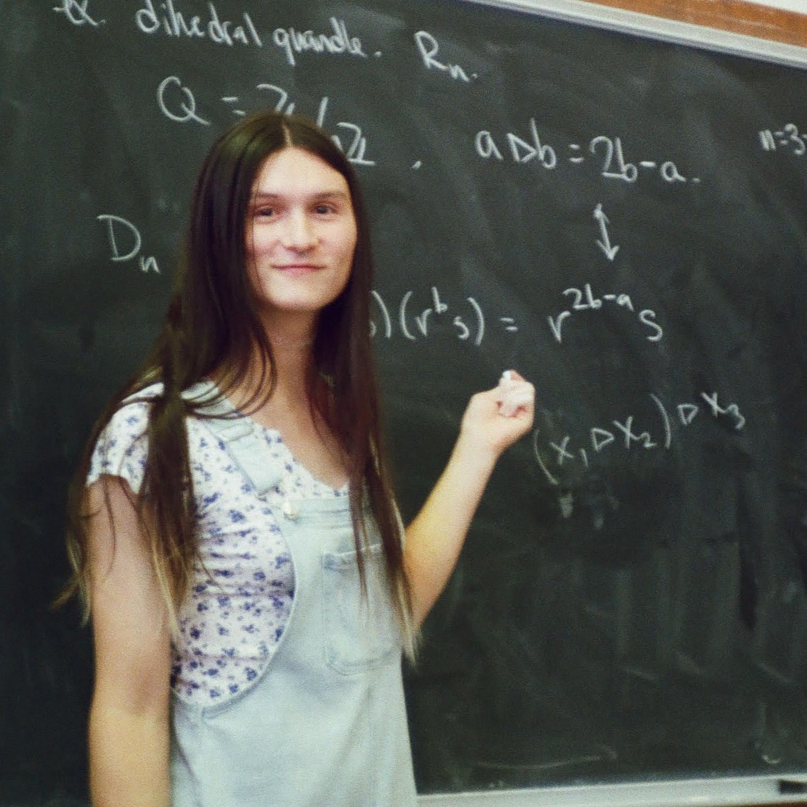

she/her, it/its
qjmsalix [at] ucsc [dot] edu
Mathematics Department
University of California, Santa Cruz
1156 High Street
Santa Cruz, CA 95064
office:
Starting Fall 2026, I am a PhD student at UC Santa Cruz. Before that, I was a student in the Causeway Post-baccalaurate Program at Northwestern University. I completed my B.S. in astrophysics at UC Davis.
I'm broadly interested in topology, geometry, and algebra. I've done some work with quandles, and lately I've been getting into geometric group theory.
Besides math, I enjoy making music (I play flute, euphonium, guitar, bass, and sing), playing video games (especially platformers, deckbuilders, and puzzle games), and generally messing around with computers. I occasionally get into sports as well, and I try to stay active with HEMA. Feel free to talk to me about any of these things!
Publications and preprints:
Conferences I've attended, along with talks I've given (in quotations):
Eventually I'll put cool stuff here :) Probably related to music, video games, or photography.